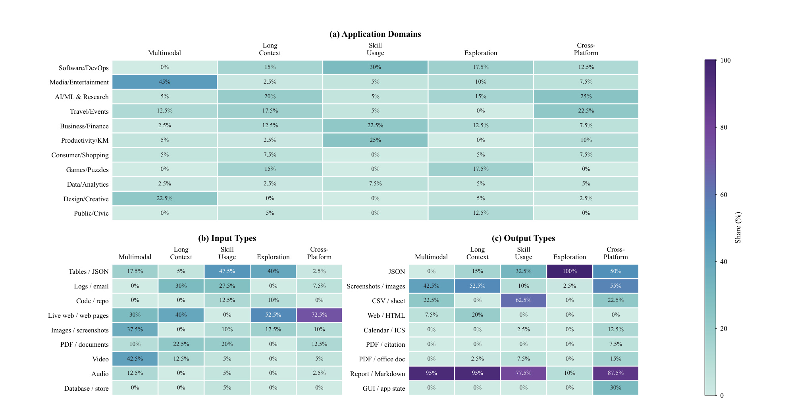
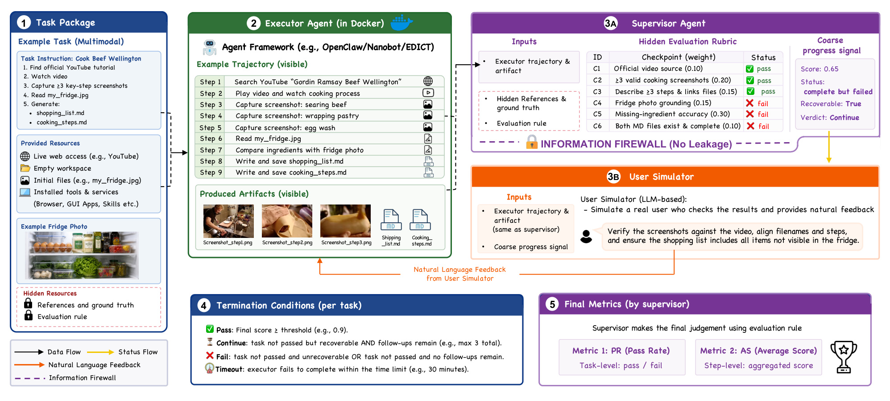
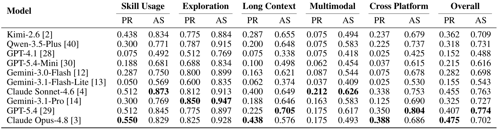
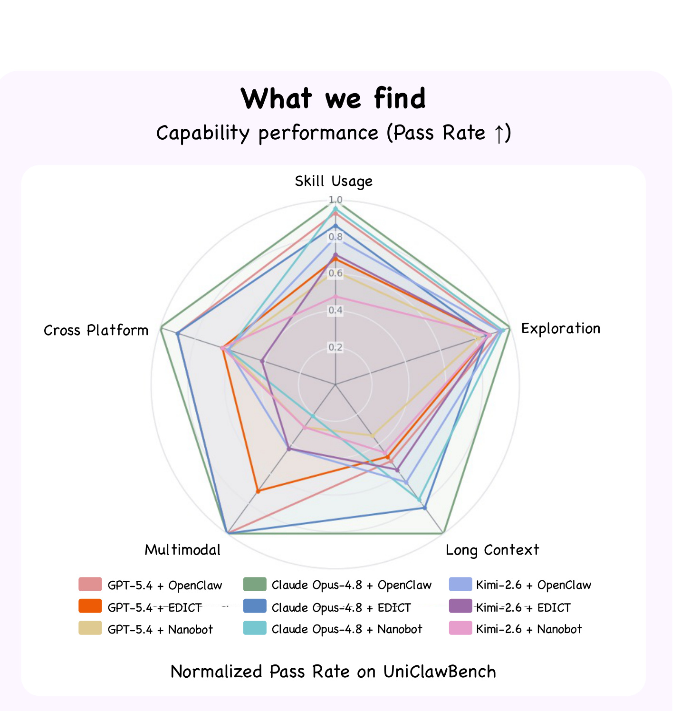
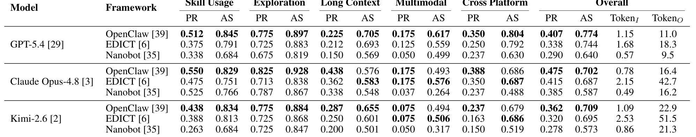
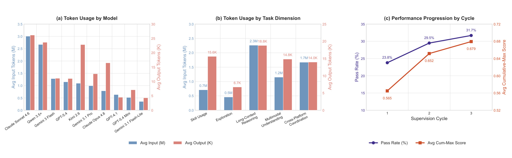

UniClawBench：面向真实任务的通用主动式 Agent 基准
UniClawBench 是香港大学 MMLab 主导、与美团研究者合作完成的主动式 Agent 评测工作。论文于 2026 年 7 月 9 日公开，作者为 Zhekai Chen、Chengqi Duan、Kaiyue Sun、Bohao Li、Yuqing Wang、Manyuan Zhang 与 Xihui Liu。本文的唯一论文入口是 arXiv:2607.08768；官方项目页 与 GitHub 仓库 在本轮事实核验中均可访问。它不是再增加一组网页点击题，而是试图回答更基础的问题：当 Agent 真的进入浏览器、终端、本地文件和 GUI 应用，经历多轮用户反馈并需要交付可检查工件时，应怎样区分“模型不会”与“框架没有把模型能力组织起来”。
现有 Agent 基准往往依赖静态沙箱与单轮验收，并按办公、购物等场景归类；这种设计既覆盖不了真实环境的变化，也把视觉理解、长上下文、工具使用和跨应用协同混在同一类别里，导致失败之后仍不知道真正的能力瓶颈在哪里。
1. 背景和问题
主动式 Agent 与传统聊天助手的差异，不只是工具数量更多。一个真实任务常常要求它持续几十分钟：先理解用户目标和已有文件，再在网页、命令行与桌面应用之间切换，保留跨步骤证据，生成文档、图片或结构化数据，最后接受用户对中间产物的纠正。若评测只看第一轮文字回复，就会把“尚未做完但可以纠正”和“路径已经不可恢复”混成同一种失败；若只对最终答案做字符串匹配，又无法判断 Agent 是否真的访问了规定来源、是否生成了要求的工件、是否在中途使用了禁用捷径。
论文首先指出真实环境与静态沙箱之间的口径差异。WebArena 一类环境通过镜像网站获得可复现性，OSWorld 一类环境则在预构建虚拟机中固定状态。这些设计适合比较操作能力，却难以覆盖生产网页变动、实时价格更新、鉴权挑战、第三方服务故障等情况。在直播网页中，昨天保存的标准答案今天可能已经失效；因此，评测不能把“当时预录的一串答案”当作永久真值，而要检查 Agent 是否给出可追溯证据、是否完成必要步骤、最终工件是否满足任务约束。
第二个缺口是单轮范式忽略可恢复性。真实用户会指出文件命名不一致、要求补一张截图、质疑来源，或者新增一个约束。一个 Agent 的价值不只体现在首次成功率，也体现在获得有限反馈后能否定位缺口、保留已完成工作并收敛到合格结果。反过来，如果评测用一个知道全部答案的“用户模拟器”直接告诉执行 Agent 哪里错了，后续成功又会被答案泄漏污染。因此，多轮评测必须同时满足两项看似冲突的要求：反馈足够自然且有用，隐藏规则又不能穿透到被测 Agent。
第三个缺口是按场景分类不能诊断根因。“办公任务失败”可能是看不懂截图，也可能是忘了十分钟前读取的约束，或者不会在表格软件与浏览器间传递信息；“购物任务成功”也不等于相同能力在研究、旅行或软件开发里都可靠。UniClawBench 改为按成功所必需的基础能力分类：Skill Usage、Exploration、Long Context、Multimodal 与 Cross Platform。这里的归类原则不是看任务发生在哪个应用，而是问：缺少哪项能力将直接阻止任务完成。这个原则使指标第一次具有较明确的诊断意义。
这种分类还改变了基准的改进方式。按场景统计时，研究者看到“办公类分数低”，很难决定应补桌面数据、视觉模型、记忆模块还是工具接口；按能力统计后，若多个场景都在 Long Context 上失败，就可以检查约束保留、证据压缩和状态恢复，而不是继续增加同类办公题。反之，如果 Skill Usage 已高但 Cross Platform 仍低，问题更可能出在应用间状态传递和最终工件一致性。能力桶并不消除任务交叉性，却为失败分析提供了一个可操作的第一层索引。
论文选择真实软件与 live web，也意味着评测对象从“生成答案”扩展到“维护证据链”。一个结果可能语义正确，却因为没有保存来源、使用了任务禁止的网页、输出文件缺字段而不能通过；另一个结果虽然未完成，但已经可靠地满足大部分 checkpoint，仍有修复价值。前者要求 PR 维持严格，后者要求 AS 不把部分进度丢掉。两项指标配合，才能避免把会说服用户的表面完成感等同于可审计交付。
这套问题意识也直接关联推荐系统。推荐链路中的离线指标通常假设候选集、标签和特征已经固定，但面向用户的推荐 Agent 可能需要跨商品页、评论、日历和历史记录完成组合目标，且用户会在交互中改变约束。此时只看最终推荐列表，无法区分召回不足、视觉理解错误、长程偏好遗忘、工具失败或工作流编排损耗。UniClawBench 并未直接评测推荐算法，却提供了一个有用的评测分解：把最终成功、过程完成度、能力桶与执行框架同时记录，避免用单一离线相关性指标解释整个 Agent 产品。
2. 方法
2.1 能力驱动的任务分类与 400 个双语任务
UniClawBench 手工设计 400 个中英文真实任务，并把每个任务分配给一个首要能力桶。Skill Usage 关注能否发现、检查并正确调用已有 skill、API 或命令行工具；Exploration 关注在环境不确定、路径未知时能否主动搜索、验证假设并改变策略；Long Context 关注长轨迹中对多源证据、约束和状态的保持；Multimodal 关注图像、视频、音频与 GUI 状态的理解和落地；Cross Platform 则要求在多个应用之间协调动作，最终完成一个统一目标。分类标签描述的是决定任务成败的主瓶颈，而不是应用名称。
每个 task package 把公开信息和隐藏信息严格拆开。公开部分包括用户指令、输入文件或网页、允许的工具与服务、已安装 skills、运行环境以及预期产物类型；隐藏部分包括参考证据、ground truth 和逐项验收 rubric。任务输出也不限定为一段文字，而可能是 JSON、CSV、HTML、日历文件、办公文档、截图或 GUI 应用状态。这样做的意义在于，成功必须落到可观察工件，而不只是模型在对话里声称“已经完成”。

Figure 3 说明“400 个任务”并非由一种网页问答模板批量改写。上方热力图横向比较五种能力、纵向覆盖软件开发、媒体娱乐、AI 研究、旅行、金融、生产力、购物、游戏、数据分析、设计和公共事务等领域；下方进一步拆开输入与输出格式。例如 Exploration 中实时网页输入占 52.5%，输出 JSON 占 100%；Multimodal 的视频输入占 42.5%、图像输入占 37.5%；Cross Platform 中实时网页输入达到 72.5%，而报告/Markdown 输出为 87.5%。这些比例并不证明任务难度完全均衡，但至少让读者能检查某个能力分数是否被单一模态或场景支配，也能发现不同能力桶之间潜在的输入难度偏差。
2.2 三角色闭环与信息防火墙
闭环评测由 executor、hidden supervisor 和 user simulator 三个角色组成。Executor 是真正被评估的 Agent，只接触公开任务包，在容器内操作工具并把过程轨迹与结果工件写到可观察位置。Supervisor 位于独立工作区，可以看到完整轨迹、产物、隐藏参考和任务 rubric；它把证据逐项映射到 checkpoint，输出分数以及 pass、fail 或 continue 状态。User simulator 模拟普通用户，只能看到执行者可见的轨迹、工件和一个粗粒度进度信号，用自然语言表达缺漏或改进意见。
核心设计不是“多加一个 LLM judge”，而是角色之间的信息防火墙。Supervisor 的具体 checkpoint、私有参考和判断理由不会传给 user simulator；后者也不能把隐藏答案包装成用户提示。它只知道当前尝试是否通过、是否失败、是否仍可恢复，再依据可见材料提出反馈。系统还使用 feedback rewriter 对反馈做一次净化，降低无意中透露评测规则的风险。这样，后续轮次的提升更接近真实用户纠错，而不是裁判把答案喂给选手。

Figure 2 用 Beef Wellington 任务展示完整信号流。左侧任务包要求找到官方教程、截取关键步骤、读取冰箱照片并生成购物清单与烹饪步骤；中间执行 Agent 已产生轨迹和五个工件；右上隐藏监督器按六个 checkpoint 打分，前三项通过，但冰箱 grounding、缺料准确性和文件完整性失败，因此得到 0.65、complete but failed、recoverable。防火墙只把“仍可继续”的粗状态传给右下用户模拟器，模拟器结合可见截图和文件提出“核对截图、文件名与缺料清单”的自然反馈。图底部同时定义 pass、continue、fail 与 timeout 的终止条件，清楚表明多轮不是无限重试，而是带预算的可恢复状态机。
2.3 宿主监督、容器执行与终止逻辑
运行时采用 host-supervised、container-executed 的结构。每个任务在全新的 Docker 容器中启动，容器包含公开指令、输入源、工具、skills 与相关服务；隐藏参考和 rubric 始终留在宿主侧的监督器工作区。每轮执行结束后，runner 收集对话、工具调用、运行状态和保存的工件，再交给 Supervisor。若状态为 continue，经过净化的反馈才会成为下一条用户消息；若通过、发生不可恢复错误、耗尽 follow-up 预算或超时，任务立即终止。
实验中每个任务在首次指令后最多允许两次用户 follow-up，即最多三个监督周期。标准任务的全局时限为 30 分钟、单轮时限为 20 分钟；长上下文任务分别放宽到 45 与 30 分钟。所有框架运行相同任务、rubric 与评分流水线，并配置同一组基础 skills。硬件为 Intel Core i7-13700、宿主 16GB 内存，每个隔离容器分配 2GB，平均单任务耗时约 17.4 分钟。这个配置不是为了模拟大规模线上 serving，而是把环境资源固定，使对照更接近框架和模型差异。
2.4 PR、AS 与模型/框架解耦实验
本文没有可复用的编号优化公式；它是一篇基准与系统论文，核心定义都以运行规则给出。为便于理解，可把论文对 Pass Rate 的文字定义写成：
符号解释：分母是某个模型—框架组合实际执行的任务数，分子只计最终状态为 pass 的任务；checkpoint 做了大部分但最后工件不完整的任务仍算失败。PR 因而是严格的端到端完成指标，对长链路上的任意不可恢复错误都很敏感。
Average Score 则保留 checkpoint 层面的部分进度，可表为：
符号解释：\(N\) 为任务数，\(s_i^{\mathrm{checkpoint}}\) 是隐藏监督器按任务 rubric 聚合出的完成分。若运行超过全局或单轮时限，论文取已完成轮次中最高的 checkpoint 分，而不是把全部部分进度清零。PR 与 AS 的间距因此具有诊断价值：AS 高而 PR 低，意味着 Agent 经常完成多数步骤，却在末端一致性、工件完整性或跨步骤约束上“半途失败”。
实验用两组对照把模型层和框架层分开。第一组把十个执行模型全部放在 OpenClaw v2026.3.11 下，观察基础模型差异；第二组选择 GPT-5.4、Claude Opus-4.8 和 Kimi-2.6，分别接入 OpenClaw、Nanobot v0.1.5.post3 与 EDICT，观察 harness 对同一模型的放大或抑制。这个解耦比单纯扩大模型榜单更关键：Agent 的最终能力不是模型权重的单变量函数，而是模型、上下文组织、角色交接、工具状态和反馈闭环的组合结果。
3. 实验结果
3.1 评测可靠性与实验口径
论文先验证自动监督器是否与人类判断基本一致。研究者随机抽取 50 条已完成轨迹，由三名人类专家分别给出二元 pass/fail 和连续完成度分数；人类 PR 取多数票，人类 AS 取三人均值。自动 pass/fail 与人类多数票的一致率为 92.0%，自动 AS 与人类完成度的 Pearson 相关系数为 0.71、Spearman 等级相关系数为 0.68。这个结果说明监督器并非随机 judge，但也远未达到可忽略误差的程度：约 8% 的二元判断仍与人类多数意见不一致，连续分数只达到中强相关。
可靠性实验还有两个边界。第一，只抽取 50 条轨迹，且论文没有在主文中逐能力报告误差；某些需要视觉 grounding 或跨平台证据的任务可能比纯文本工件更难判。第二，Supervisor 和 user simulator 都使用独立的 GPT-5.4 Codex Agent，并设置高推理强度。角色实例虽然分离，但仍属于同一模型家族，不能排除共享偏好、共同盲点或对特定轨迹风格的偏置。因而 92% 应理解为“自动管线达到可用一致性”，而非评测真值已经解决。
3.2 固定框架下的模型差异
在固定 OpenClaw 的十模型对照中，所有模型的 overall PR 都低于 0.5。Claude Opus-4.8 的总体 PR 最高，为 0.475；Claude Sonnet-4.6 为 0.455，GPT-5.4 为 0.407。总体 AS 的排序并不相同：GPT-5.4 最高为 0.774，Claude Sonnet-4.6 为 0.763，而 overall PR 最高的 Claude Opus-4.8 的 AS 只有 0.702。这说明“能完成更多 checkpoint”与“能把整条任务严格闭环”不是同一个能力。

Table 1 进一步揭示能力结构。Exploration 是相对最强的一项：Gemini-3.1-Pro 的 PR/AS 达到 0.850/0.947，Claude Opus-4.8 为 0.825/0.928，多数模型都能搜索、试探并发现可行路径。Skill Usage 也相对成熟，Claude Opus-4.8 的 PR 达到 0.550。困难集中在 Multimodal、Long Context 与 Cross Platform：例如 overall PR 领先的 Claude Opus-4.8 在 Multimodal 只有 0.175；GPT-5.4 在 Long Context 为 0.225，在 Cross Platform 为 0.350。更值得警惕的是大量“高 AS、低 PR”组合，如 Qwen-3.5-Plus overall AS 为 0.731、PR 却仅 0.318，表明模型经常正确完成局部步骤，却没有满足最终工件或全局约束。
论文把这种现象称为 halfway failure。它对工程系统很重要：若产品只展示“任务进行中”的可见进度，用户可能认为 Agent 已经接近成功；但严格验收会发现某个证据未保存、文件名错位、跨应用状态没有同步，导致整个交付不可用。推荐 Agent 同样可能已抓取商品信息、提取偏好并生成候选，却在最终排序时忘记价格上限或旅行日期。仅用平均过程分掩盖最终失败，会系统性高估自动化价值。
3.3 框架架构如何放大或抑制模型能力
跨框架结果是本文最有辨识度的证据。OpenClaw 对三个代表模型都取得最高 overall PR：GPT-5.4 为 0.407，Claude Opus-4.8 为 0.475，Kimi-2.6 为 0.362。论文将其优势归因于集中式单 Agent 轨迹：原始约束、工具证据与后续反馈保存在统一上下文中，减少交接时的信息损失。这里不能简单断言集中式永远优于多 Agent，因为评测只覆盖三个框架；但在这批长链路真实任务里，统一轨迹确实更容易把部分进度转成最终合格结果。

Figure 1 的右侧原始子图把 GPT-5.4、Claude Opus-4.8 与 Kimi-2.6 分别接入 OpenClaw、EDICT 和 Nanobot 后的归一化 PR 画成雷达图。它不用于读取精确数值，精确结果应以 Table 2 为准；它的价值是展示能力轮廓如何随 harness 改变。同一模型在 Exploration 方向普遍接近外圈，而 Long Context、Multimodal 与 Cross Platform 的收缩更明显；OpenClaw 曲线通常覆盖更大面积，EDICT 与 Nanobot 则在不同能力上出现不均匀损失。最重要的信号不是某条曲线整体更大，而是执行配置变化可显著改变同一模型的能力外观。因此，基准希望把 Agent 评测从“给一个总分”推进到“解释失败由模型层还是执行层造成”。

Table 2 展示三种不同失败形态。EDICT 常出现较高 AS、较低 PR 与高 token 成本：GPT-5.4 在 EDICT 下 AS 为 0.744、PR 为 0.338，平均输入/输出 token 为 1.68M/18.3K；Kimi-2.6 则达到 2.53M/51.5K，却只有 0.320 PR。论文认为多 Agent 编排中的状态轮询、身份约束遗忘与交接信息损失会产生 coordination friction：子 Agent 做了很多局部工作，但主协调器无法持续监督或准确整合，甚至最后又自己重做。Nanobot 走向另一端，GPT-5.4 只使用 0.57M 输入 token、9.5K 输出 token，代价是 PR 降到 0.290；轻量上下文管理节省成本，却更容易丢失长证据链和严格工件要求。
同一表格也说明框架效应会随模型变强而放大。Claude Opus-4.8 在 OpenClaw 与 Nanobot 下 PR 分别为 0.475 与 0.385，GPT-5.4 则为 0.407 与 0.290；强模型不能自动抵消 harness 的信息压缩与交接损耗。相反，某些分项中框架还能改变优劣关系，例如 Claude Opus-4.8 在 Nanobot 的 Skill Usage PR 为 0.525，接近 OpenClaw 的 0.550，但 Multimodal 从 0.175 降到 0.037，说明轻量框架对不同能力的损伤并不均匀。
3.4 成本、闭环恢复与案例证据
Figure 4 把 token 成本与反馈收益拆开。按模型看，Claude Sonnet-4.6 与 Qwen-3.5-Plus 的输入/输出 token 都处在高位；按能力看，Long Context 平均约需 2.3M 输入、18.8K 输出 token，Multimodal 约 1.2M/14.8K，Cross Platform 约 1.7M/14.0K，均明显高于 Exploration 的 0.5M/6.7K。困难能力不仅成功率低，也消耗更多上下文和输出预算，这提示 serving 成本不能只按“每个任务一口价”估算。

Figure 4(c) 给出闭环设计的直接证据：第一个监督周期的 PR 为 23.8%，第二周期升至 29.5%，第三周期为 31.7%；对应的累计最高 AS 从 0.565 升至 0.652，再到 0.679。第二轮带来的 PR 增益为 5.7 个百分点，第三轮再增加 2.2 个百分点，呈现边际收益递减。它既支持“有限用户反馈能修复部分失败”，也说明不能靠无限轮次把基准做满；仍有大多数任务在三轮后失败，长程记忆、视觉 grounding 和跨应用协调并未被反馈本身解决。
附录 D 的单个案例提供了过程解释。第一周期中，执行者遇到美国国会图书馆网站的 Cloudflare 挑战后，改用 API 和 HEAD 请求继续验证资源，并生成五个工件；但监督器发现来源约束、证据绑定与结果完整性仍有问题，给出 0.65 和 continue。第二周期没有只打补丁，而是重新读取本地排除记录、调用官方 item JSON、发现用户未明确指出的 rights 字段和 item type 错误，重建选择管线并逐项验证，最终获得 0.96 和 pass。这个案例说明有效反馈的作用不是泄露目标答案，而是促使 Agent 回到可见工件与来源证据，重新建立可审计链路。
不过，实验仍缺少几个关键对照。论文没有系统比较“真实人类反馈”与 user simulator 反馈是否等价，也没有把 feedback rewriter 去掉做泄漏消融；三种框架的默认实现差异较大，skills、上下文压缩和调度策略可能纠缠在一起；live environment 的时间漂移会让后续复现实验面对不同网页状态。结果因此更适合支持“模型与框架共同决定表现”这一方向性结论，而不适合把当前榜单差异解释为永久排名。
4. 总结
4.1 我的判断与工程迁移
UniClawBench 最重要的贡献不是 400 这个规模，而是把主动式 Agent 评测组织成四个可分离层次：能力驱动的任务桶、真实容器中的可观察轨迹与工件、隐藏 checkpoint 监督，以及有限预算的自然反馈闭环。PR 与 AS 的组合让“局部完成但最终失败”变得可见；固定框架和固定模型的两组对照，又让基础模型能力与 harness 设计不再被同一个总分掩盖。对于真正要上线的 Agent，这比单轮答案准确率更接近验收逻辑。
对推荐系统而言，可迁移的不是把现有离线数据直接塞进 UniClawBench，而是复制它的分解方法。面向旅游、购物、内容研究或企业知识的推荐 Agent，可以分别建立探索、长期约束保持、多模态证据、跨应用工件和 skill 使用 checkpoint；同时保留最终端到端成功率与过程完成度。在线实验还应把 token、时延、人工接管率和失败可恢复性一起记录。这样才能区分排序模型没有给出好候选，还是 Agent 在执行中遗忘预算、看错图片或没有把结果写入用户真正需要的应用。
4.2 局限、风险与后续跟进
这篇论文至少有四项限制。第一，400 个手工任务覆盖面广但规模仍小，按能力划分后的样本更少，能力分数的置信区间和稳定性需要进一步报告。第二，真实网页与软件状态会漂移，live execution 提升真实性，却降低跨时间复现性；版本、日期、网络和鉴权都可能改变难度。第三，监督器与用户模拟器依赖 GPT-5.4 Codex Agent，92% 人类一致率仍留下判断误差，也缺少跨 judge 模型复核。第四，能力桶只给每个任务一个主标签，但真实失败常由多项能力相乘产生；把 Cross Platform 低分完全归因于协同，也可能遗漏视觉或长上下文的共同作用。除此之外，三种框架的实现成熟度、默认 prompts 和上下文策略不完全等价，框架榜单仍需谨慎解释。
后续最值得做三类工作。其一，复现同一任务在不同日期与软件版本下的重复运行，报告 PR/AS 方差、环境失败率和 rubric 稳定性，以区分系统随机性与模型差异。其二，加入 judge-family、真实用户反馈和防火墙消融，检查 coarse signal、feedback rewriter 与隐藏 rubric 隔离分别贡献多少，尤其观察是否出现隐性答案泄漏。其三，把框架拆成更细的可控变量：统一 skills 与 token 预算，只改变集中式/多 Agent 编排、记忆压缩、状态同步和交接协议，才能定位 Table 2 中的差距究竟来自哪里。
从研究方向看，UniClawBench 把 Agent 系统的瓶颈从“模型答不出”推进到“模型—框架—环境—监督共同形成的失败链”。如果后续工作只追逐更高 PR，却不同时审计 AS、token 成本、环境漂移和裁判偏差，就可能把昂贵的反复尝试误当成真正可靠的自主执行。更有价值的进展应是：在固定成本和可复现环境下，提高最终工件通过率，并能解释每一次失败发生在哪个能力、哪个交接点和哪条隐藏约束上。